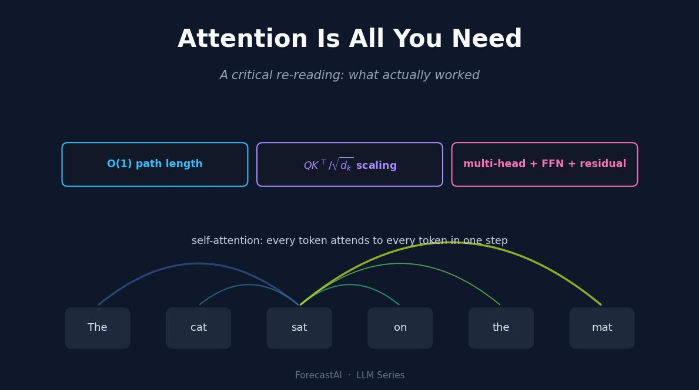

2017년 Transformer 논문은 하나의 슬로건으로 기억되지만, 오래 남은 기여는 “어텐션이 전부”라는 문장보다 훨씬 구체적이고 논쟁적입니다. 이 리뷰는 논문의 진짜 메커니즘, 즉 경로 길이가 일정하고 완전히 병렬화되는 상호작용 층을, 이후 연구가 실제로 하중을 떠받친다고 밝힌 보조 장치들과 분리해 봅니다. 스케일링 논리, 텐서 차원 추적, 비용 모델을 실제로 실행되는 NumPy 코드로 재현합니다.
저자
Prof. Shin
공개
2026-08-04

[개념 시각화] 셀프 어텐션은 모든 토큰을 한 번에 연결하고, 세 가지 보조 장치가 하중의 상당 부분을 떠받칩니다.
논문이 제거하려던 병목
2017년 무렵 시퀀스 모델의 주류는 순환 신경망이었습니다. 어텐션을 얹은 인코더–디코더 LSTM (Sutskever 기타 2014년; Bahdanau 기타 2015년)이 기계 번역의 최고 성능을 쥐고 있었고, (bahdanau2015의?) 어텐션 모듈은 디코더가 하나의 압축 벡터가 아니라 모든 인코더 상태를 되돌아보게 함으로써 실제 정보 병목을 없앤다는 것을 이미 보여 주었습니다. 문제는 정확도가 아니라 순환 구조 자체였습니다. 위치 \(t\)의 은닉 상태를 계산하려면 먼저 \(t-1\)의 상태를 계산해야 하기 때문입니다. 이 순차적 의존성은 시간 축을 따라 학습을 병렬화하기 어렵게 만들고, 멀리 떨어진 두 위치 사이에서 그래디언트가 지나야 하는 경로를 그 간격에 비례해 길게 늘립니다.
(vaswani2017은?) 어텐션은 남기고 순환만 버리면 어떻게 되는지를 물었습니다. 그 답이 Transformer이며, 순환 층과 합성곱 층을 쌓인 셀프 어텐션으로 대체한 것입니다. 제목이 광고하는 것이 바로 이 전환입니다. 그런데 이 슬로건은 시간이 지나면서 약간의 오독으로 굳어졌습니다. 이 구조는 어텐션 하나만으로 된 것이 아닙니다. 잔차 연결, 층 정규화, 위치별 피드포워드 네트워크, 그리고 고정된 위치 신호로 감싼 어텐션이며, 논문의 절제 실험(ablation)과 이후 10년의 후속 연구는 그 포장재 여럿이 결코 장식이 아님을 보여 줍니다. 이 리뷰는 그 메커니즘이 무엇인지, 논문의 실험이 실제로 무엇을 입증하는지, 그리고 대중적 요약이 어디에서 과장되는지를 하나씩 짚습니다.
하나의 메커니즘을 어디에나 적용하다
셀프 어텐션은 모든 위치에 대해, 그 위치의 쿼리(query)와 다른 모든 위치의 키(key) 사이의 적합도 점수에서 가중치를 얻어, 전체 위치의 표현을 가중 평균합니다. 형태가 \((n, d_k), (n, d_k), (n, d_v)\)인 행렬 \(Q, K, V\)가 주어질 때, 논문의 스케일드 닷프로덕트 어텐션(scaled dot-product attention)은 다음과 같습니다.
\[\operatorname{Attention}(Q, K, V) = \operatorname{softmax}\!\left(\frac{QK^{\top}}{\sqrt{d_k}}\right) V .\]
소프트맥스는 키 축을 따라 계산되므로, 각 출력 행은 값 벡터들의 볼록 결합입니다. 여기에 순환은 없습니다. 모든 출력 위치가 동일한 \(Q, K, V\)로부터 한 번의 행렬 곱으로 계산되며, 이 성질 덕분에 GPU가 \((n, n)\) 점수 행렬 전체를 병렬로 채울 수 있습니다. 같은 연산이 인코더 셀프 어텐션, 디코더 마스크드 셀프 어텐션, 인코더–디코더 크로스 어텐션의 세 역할에 재사용되며, \(Q\)·\(K\)·\(V\)가 어디에서 오는지와 미래 키를 가리는 인과 마스크의 유무만 다릅니다.
이 벌거벗은 연산을 학습 가능한 무언가로 바꾸는 설계 선택이 둘 있습니다. 하나는 \(1/\sqrt{d_k}\) 스케일이고, 다른 하나는 계산을 여러 헤드로 나누는 것입니다. 둘 다 말로는 간단하지만 과소평가하기 쉬우므로, 각각이 무엇을 하는지 재현해 볼 가치가 있습니다.
왜 \(\sqrt{d_k}\)로 나누는가
\(Q\)와 \(K\)의 원소가 서로 독립이고 분산이 1이라면, 하나의 닷프로덕트 \(q^{\top}k\)는 그런 곱을 \(d_k\)개 더한 것이므로 분산이 \(d_k\)가 됩니다. \(d_k\)가 커질수록 소프트맥스에 들어가는 로짓이 넓게 퍼지고, 큰 값이 입력되면 소프트맥스는 포화됩니다. 질량 대부분이 하나의 키에 몰리고 나머지 로짓을 지나는 그래디언트는 사라집니다. \(\sqrt{d_k}\)로 나누면 헤드 폭과 무관하게 로짓의 스케일이 1 근처로 회복됩니다. 아래 코드는 원본 점수와 스케일된 점수의 분산, 그리고 50개 키에 대한 어텐션 분포의 엔트로피를 비교해 이 효과를 측정 가능하게 만듭니다.
import numpy as npdef softmax(x, axis=-1): z = x - x.max(axis=axis, keepdims=True) e = np.exp(z)return e / e.sum(axis=axis, keepdims=True)def entropy(scores): p = softmax(scores)returnfloat(-(p * np.log(p +1e-12)).sum())rng = np.random.default_rng(0)for d_k in [16, 64, 256]: Q = rng.standard_normal((1, d_k)) K = rng.standard_normal((50, d_k)) raw = (Q @ K.T)[0] scaled = raw / np.sqrt(d_k)print(f"d_k={d_k:>3} | var(raw)={raw.var():7.2f} | var(scaled)={scaled.var():5.3f} "f"| entropy raw={entropy(raw):5.3f} | entropy scaled={entropy(scaled):5.3f} "f"| max weight raw={softmax(raw).max():.3f} scaled={softmax(scaled).max():.3f}")
원본 분산은 예측대로 \(d_k\)에 따라 커지고, \(d_k = 256\)에서 스케일하지 않은 소프트맥스는 완전히 붕괴합니다. 엔트로피가 수치적으로 0이 되고 하나의 키가 모든 가중치를 가져갑니다. 스케일된 쪽은 엔트로피를 건강한 중간 범위에 유지합니다(50개 키에 균등 분포라면 \(\log 50 \approx 3.91\)입니다). \(d_k\)를 더 넓은 범위로 훑고 여러 난수 시행에 대해 평균을 내면, 이 붕괴가 하나의 시드에서 나온 우연이 아니라 체계적 현상임을 알 수 있습니다.
스케일하지 않은 곡선은 헤드가 넓어질수록 0으로 향합니다. 즉 스케일 항이 없다면 네트워크는 어텐션 분포가 이미 포화된 상태에서 학습을 시작하게 되고, 논문은 이것이 스케일 계수가 존재하는 이유라고 밝힙니다. 이 그림은 초기화 기하에 대한 경고로 읽어야 합니다. \(1/\sqrt{d_k}\) 항이 없으면 넓은 헤드의 첫 순전파부터 거의 원-핫에 가까운 어텐션이 나오고, 모델이 어디를 볼지 학습하게 해 줄 그래디언트 신호가 학습이 시작되기도 전에 사라집니다.
멀티헤드 어텐션, 차원을 추적하며
단일 헤드는 값을 평균하는데, 평균 하나로는 “세 토큰 앞의 주어”와 “가장 가까운 구두점”을 동시에 담을 수 없습니다. 멀티헤드 어텐션은 입력을 \(d_k = d_\text{model}/h\) 차원 부분공간으로 사영한 다음, \(h\)개의 어텐션 연산을 병렬로 돌리고, 결과를 이어 붙여 다시 사영합니다. 사영은 각 헤드에 무엇이 좋은 쿼리–키 매치인지에 대한 고유한 관점을 부여합니다. 구현이 어긋나는 지점은 바로 이 차원 관리이므로, 코드는 \(d_\text{model}=64\), \(h=8\), 시퀀스 길이 10에 대해 각 단계의 형태를 출력합니다.
전체 파라미터와 연산 예산은 폭이 꽉 찬 단일 헤드와 거의 같습니다. 각 헤드가 \(d_k = 8\) 부분공간에서 동작하기 때문이며, 이 분할은 표현의 다양성을 사실상 공짜로 사 옵니다. 그러나 멀티헤드 어텐션이 사 주지 않는 것은 해석 가능성입니다. 이 점은 자주 과장되므로 명시할 필요가 있습니다. 단일 헤드의 가중치 행렬은 키에 대한 유효한 확률 분포이지만, 그렇다고 그것이 모델의 결정에 대한 설명이 되지는 않습니다.
히트맵의 각 행은 합이 1이므로 “이 토큰이 무엇을 보았는가”에 대한 설명처럼 읽힙니다. 그러나 그것이 평균하는 값 벡터, 그리고 하류의 나머지 일곱 헤드와 피드포워드 네트워크가 그 신호를 출력에 도달하기 전에 모두 다시 빚어냅니다. 한 헤드의 가중치를 모델의 추론으로 취급하는 것은 어텐션 맵판 찻잎 점치기입니다. 가중치는 실재하지만, 그 인과적 역할은 그림만으로 입증되지 않습니다.
절제 실험이 실제로 보여 준 것
논문의 기여는 구조만이 아니라, 저자들이 영어–독일어 번역에서 한 번에 한 요소씩 바꿔 본 Table 3에도 있습니다. 비판적으로 읽으면 이 표가 바로 “어텐션이 전부”라는 해석이 복잡해지는 지점입니다. 헤드 수를 하나로 줄이면 BLEU가 눈에 띄게 떨어지고, 헤드가 너무 많아도 나빠집니다. 즉 어텐션 자체가 아니라 헤드의 다중성이 중요합니다. 키 차원 \(d_k\)를 줄이면 품질이 나빠지는데, 이는 적합도 함수가 하중을 떠받치는 부분이라는 것과 일치합니다. 모델을 키우고 드롭아웃을 더하는 것은 예상된 방향으로 도움이 됩니다. 결정적으로, 학습된 위치 임베딩을 사인파 위치 인코딩으로 바꿔도 거의 동일한 결과가 나왔으며, 이것이 “구체적인 위치 인코딩 방식이 모델을 작동시키는 요인은 아니다”라는 흔한 주장의 근거입니다.
이 표가 인용되는 방식에는 두 가지 주의가 필요합니다. 첫째, 모든 수치는 하나의 언어쌍, 하나의 토크나이저, 하나의 학습 예산에서 나온 단일 실행 결과입니다. 논문은 시드에 따른 분산을 보고하지 않으므로, 설정 간의 작은 BLEU 차이를 신뢰할 수 있는 순위로 읽어서는 안 됩니다. 둘째, 절제 실험은 이미 Transformer 안에 있던 요소들을 바꾼 것입니다. 헤드 수, 키 폭, 위치 인코딩 방식의 상대적 중요도는 알려 주지만, 잔차 연결이나 층 정규화는 표의 어느 행도 제거하지 않으므로 분리해 내지 못합니다. 논문이 절제하지 않은 요소들에 대한 증거는 이후 연구에서 오며, 그 증거는 “어텐션만으로 충분하다”는 해석에 우호적이지 않습니다.
비용과 경로 길이: 실제로 확장을 가능케 한 이유
가장 잘 늙은 절은 복잡도 비교입니다. 셀프 어텐션 층은 \(O(n^2 \cdot d)\) 연산이 들고 임의의 두 위치를 길이 \(O(1)\)의 경로로 잇습니다. 순환 층은 \(O(n \cdot d^2)\)이 들고 최대 경로 길이가 \(O(n)\)입니다. 아래 코드는 \(d = 512\)에 대해 여러 시퀀스 길이에서 둘을 계산합니다.
d =512ns = np.array([32, 64, 128, 256, 512, 1024, 2048, 4096])self_ops = ns**2* drec_ops = ns * d * dfor n, s, r inzip(ns, self_ops, rec_ops):print(f"n={n:>4} | self-attn ~{s:>14,} | recurrent ~{r:>14,} "f"| ratio={s/r:6.3f} | path: self=1, rec={n}")
대부분의 요약이 빠뜨리는 세부는 \(n = d = 512\)에서의 교차점입니다. 셀프 어텐션은 시퀀스가 모델 폭보다 짧은 동안에만 층당 더 쌉니다. 그 지점을 넘으면 이차 비용이 순환 층을 추월하며, 이것이 장문맥 Transformer가 준이차(sub-quadratic) 어텐션이라는 방대한 문헌을 낳은 이유입니다. 반면 열화되지 않는 이점은 경로 길이입니다. 셀프 어텐션은 어떤 시퀀스 길이에서도 \(1\)이고, 순환은 \(n\)입니다.
왼쪽 패널은 교차점을, 오른쪽 패널은 이 구조를 깊게 학습 가능하게 만든 성질을 보여 줍니다. 임의의 두 위치 사이의 경로 길이가 일정하다는 것은, 멀리 떨어진 토큰을 잇는 그래디언트 신호가 \(n\)번의 야코비안 곱을 연달아 견딜 필요가 없다는 뜻입니다. 바로 이 실패 모드가 RNN에서 장거리 학습을 취약하게 만들었습니다. 병렬성과 짧은 그래디언트 경로, 이것이 실제로 확장을 가능케 한 메커니즘이며, 어텐션이 유일하게 표현력 있는 연산이라는 어떤 주장보다 이 쪽이 핵심입니다.
실제로 작동한 것
실들을 모아 보면, 논문의 지속적 기여는 제목보다 좁고 구조적입니다. 셀프 어텐션은 완전 병렬이고 경로 길이가 일정한 상호작용 층을 제공했고, 이는 모델 크기와 깊이를 제한하던 순환의 두 성질을 없앴습니다. 그러나 논문이 덜 강조한 요소들이 실은 많은 일을 하고 있습니다. (he2016resnet에서?) 들여온 잔차 연결은 신호가 열화되지 않으면서 인코더와 디코더를 깊게 쌓을 수 있게 해 주는 부분입니다. 이를 제거하면 깊은 Transformer는 학습되지 않습니다. 층 정규화(Ba 기타 2016년)는 서브층 사이에서 활성값의 스케일을 안정화합니다. 그리고 그 정규화의 위치가 중요합니다. 논문은 각 서브층 뒤에 두었지만(Post-LN), 이후 연구는 앞에 두면(Pre-LN) 원래 레시피가 요구하던 학습률 워밍업이 필요 없어지고 깊은 Transformer가 더 안정적으로 학습된다는 것을 보였습니다 (Xiong 기타 2020년). 학계가 조용히 Pre-LN으로 갈아탄 것은, 원래 배치가 최적이 아니었으며 이 구조가 슬로건이 무시하는 세부에 민감하다는 직접적 증거입니다.
그래서 정직한 독해는, 어텐션은 필요했지만 충분하지는 않았다는 것입니다. 논문의 진짜 성취는 어텐션, 잔차 연결, 정규화, 위치별 피드포워드 네트워크를 쌓았을 때 안정적으로 학습되고 시퀀스에 대해 병렬화되는 하나의 블록으로 조립한 것입니다. 어텐션을 절제하면 당연히 망가지지만, 잔차를 절제해도 망가집니다. 그런데 논문 자신의 실험은 전자만 시험했습니다.
한계와 논문이 매듭짓지 못한 것
2017년 결과가 얼마나 일반화되는지에는 세 가지 한계가 있습니다. 위에서 보인 이차 비용은 실재하는 천장입니다. 발표된 그대로의 구조는 수정 없이는 아주 긴 시퀀스로 확장되지 않으며, \(n = d\)에서의 교차점은 “실무적으로는 충분히 선형”이라는 표현이 시사하는 것보다 문제가 일찍 시작됨을 보여 줍니다. 평가 범위도 좁았습니다. 번역 과제 둘과 영어 구문 분석 확인 하나였으므로, 논문이 입증하는 것은 그 과제들에서 Transformer가 순환 기준선과 대등하거나 앞선다는 것이지, 이후 이 구조가 달성한 범용적 우위가 아닙니다. 그 우위를 보이는 데에는 (devlin2019과?) 후속 연구의 규모 확장이 필요했습니다. 그리고 부수 이점처럼 광고되곤 하는 어텐션 가중치의 해석 가능성은 논문의 증거로 뒷받침되지 않으며 이후 논쟁의 대상이 되어 왔습니다. 가중치는 실재하는 중간 값이지만, 출력과의 인과 관계는 그것을 들여다본다고 드러나지 않습니다.
결론
10년 뒤 다시 읽으면, “어텐션이 전부”는 발견이라기보다 도발로 다루는 편이 낫습니다. 발견은, 특정 블록, 즉 잔차 연결·층 정규화·피드포워드 네트워크로 감싼 스케일드 닷프로덕트 멀티헤드 어텐션이 시퀀스 모델에 완전 병렬성과 일정한 경로 길이의 그래디언트 경로를 동시에 주고, 이 조합이 순환이 확장되지 못한 곳에서 확장된다는 것입니다. \(1/\sqrt{d_k}\) 스케일과 멀티헤드 분할은 어텐션에서 반드시 옳아야 했던 부분이며, 여기의 코드가 그 이유를 보여 줍니다. 그러나 논문이 거의 지나치듯 언급하고 한 번도 절제하지 않은 잔차와 정규화 장치는, 이후 연구가 안정성을 위해 재배치할(Pre-LN) 만큼 충분한 하중을 떠받치고 있었습니다. Transformer를 쓰거나 가르치는 사람에게 유용한 교훈은 슬로건이 아니라 분해입니다. 어느 조각이 병렬성을, 어느 조각이 학습 가능한 깊이를, 어느 조각이 위치 신호를 공급하는지 아는 것입니다. 다음에 읽게 될 구조는 그중 일부는 남기고 일부는 교체할 것이기 때문입니다.
참고문헌
Ba, Jimmy Lei, Jamie Ryan Kiros, 와/과 Geoffrey E. Hinton. 2016년. “Layer Normalization”. arXiv preprint arXiv:1607.06450.
Bahdanau, Dzmitry, Kyunghyun Cho, 와/과 Yoshua Bengio. 2015년. “Neural Machine Translation by Jointly Learning to Align and Translate”. International Conference on Learning Representations (ICLR).
Sutskever, Ilya, Oriol Vinyals, 와/과 Quoc V. Le. 2014년. “Sequence to Sequence Learning with Neural Networks”. Advances in Neural Information Processing Systems (NeurIPS) 27.
Xiong, Ruibin, Yunchang Yang, Di He, 기타. 2020년. “On Layer Normalization in the Transformer Architecture”. International Conference on Machine Learning (ICML).